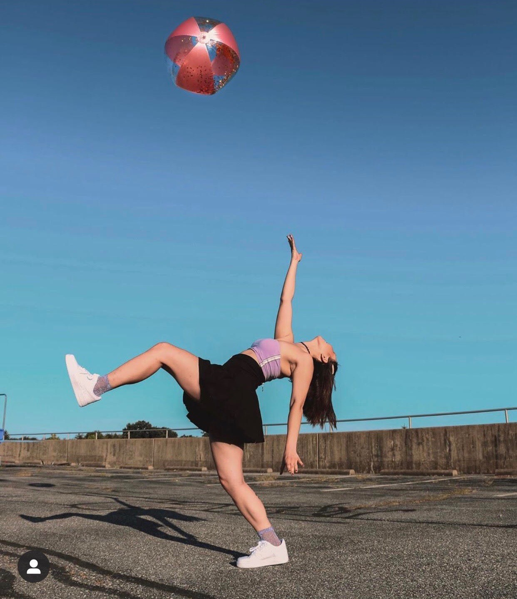
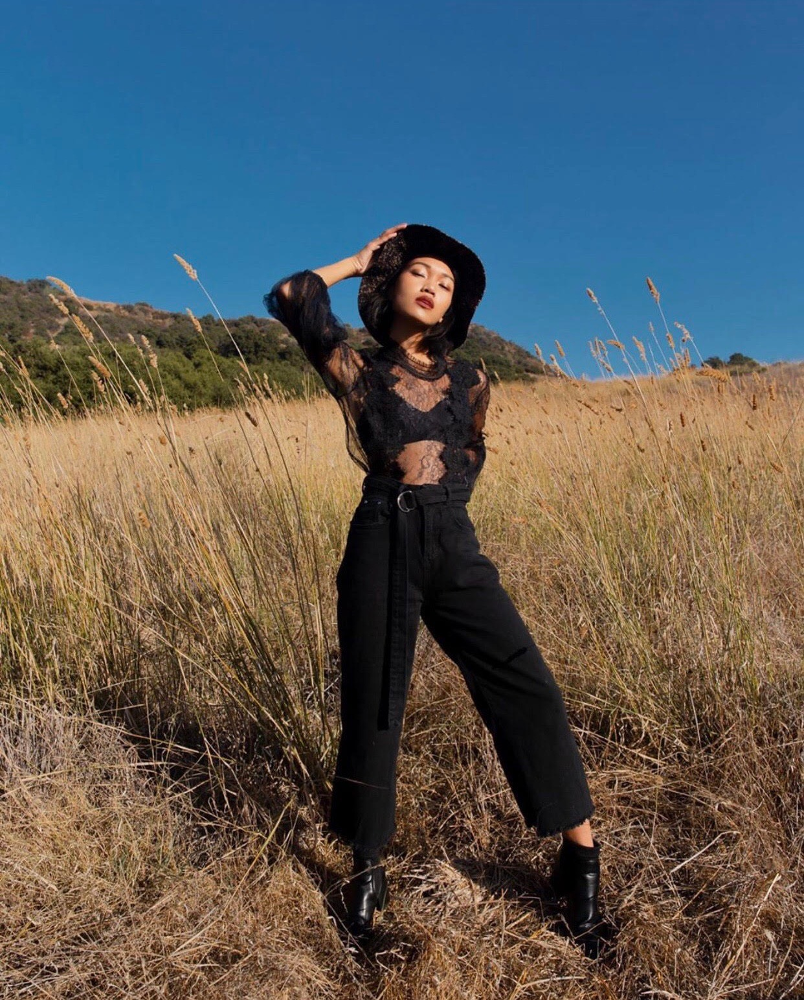
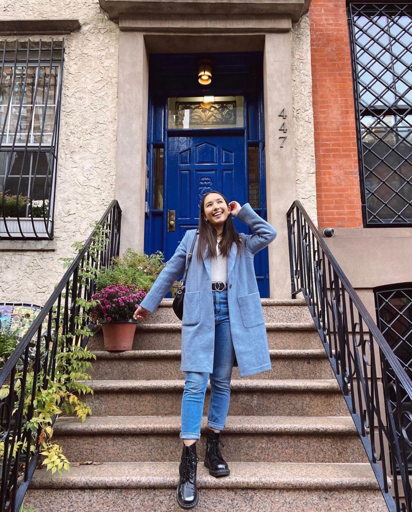

Petite in the City !
By Iley Cao
I recently moved to NYC and haven't had time to take create content, so here is some style inspo!
Sneakers have been saving my life out here in NYC!

Sometimes when I don't know what to wear and I'm running late I will throw on a sundress and call it good! There's too many people in NYC anyways so no one is really paying attention!

Stop bending over backwards for outfits that don't make you feel great in your own body!

I am becoming a true New Yorker by taking inspo from this all black outfit ;) but in reality I am too tired to coordinate colors

Wearing one color makes it easier because it's one less decision you have to make! Everything matches if its all the same color!